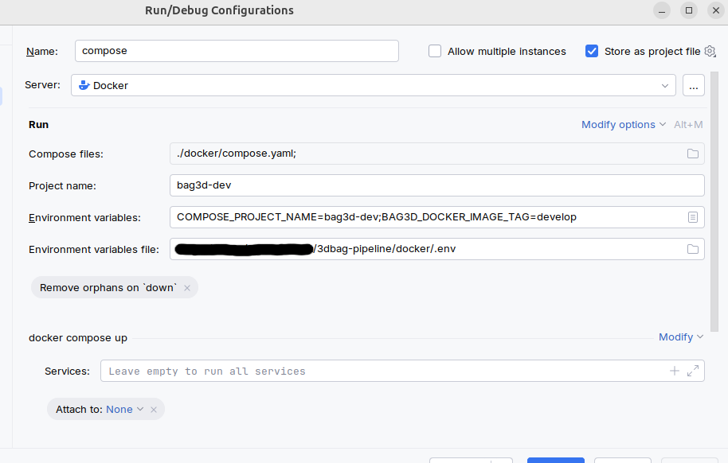
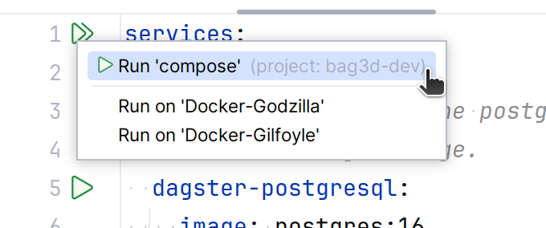
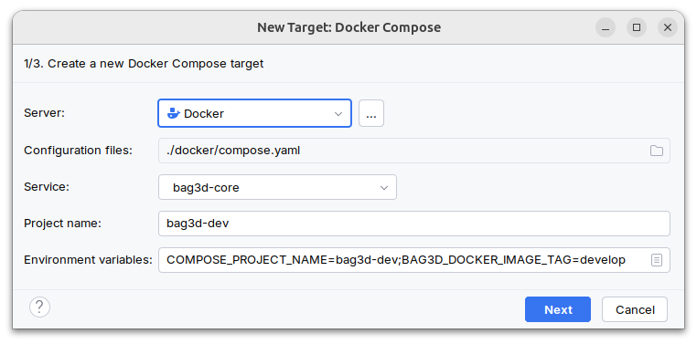
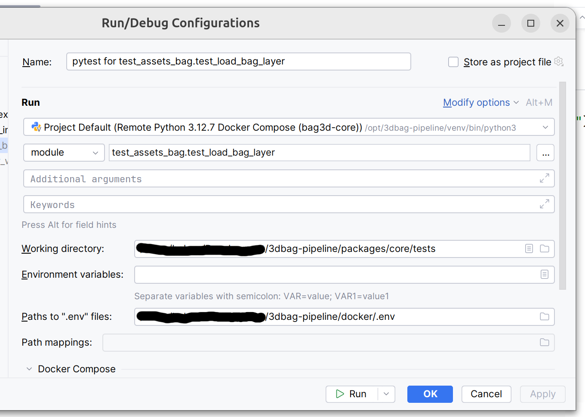

Code¶
Thank you for considering contributing to the 3DBAG pipeline. In this document, we will guide you through setting up your local development environment and running the tests. For information on how to submit a contribution, please refer to our guidelines.
Setup¶
After cloning the repository from https://github.com/3DBAG/3dbag-pipeline, the recommended way to set up your environment is with Docker.
Requirements:
-
Python >=3.11
-
make
-
Docker Engine
-
Docker Compose (>= 2.22.0)
We use make for managing many commands that we use in development.
Docker Volumes¶
The Makefile uses two different .env files for controlling the local environment and the environment in the Docker containers.
The .env file in the root directory is used for the local environment and the docker/.env file is used for the Docker environment.
Create the Docker volumes with:
make docker_volume_create
In addition, make docker_volume_rm removes the volumes, make docker_volume_recreate recreates the volumes.
Docker containers¶
Start the Docker containers with:
make docker_up
When you issue this command for the first time, several things happen:
-
The required base images are pulled from DockerHub.
-
The 3dbag-pipeline workflow images are built from the local source code.
-
The containers are connected to the volumes and networks.
-
The dagster-webserver is published on
localhost:3003.
The running containers contain all the tools required for a complete run of the 3dbag-pipeline. This means that you can develop and test any part of the code locally.
The docker_up target sets the docker compose project name to bag3d-dev.
Docker setup in PyCharm (professional)¶
Running the services¶
Create run configuration that uses the docker compose file.
Use the docker/.env environment variables file. For direct Docker Compose or PyCharm
configurations, also set the manifest-derived variables printed by:
eval "$(python3 scripts/manifest_versions.py env --format shell)"
For example, see the screenshot below.

Start the services with make docker_dev; it resolves the required image references from
the manifest before invoking Docker Compose. For example, see the screenshot below.

Running tests¶
Make sure that the docker volumes are created (see above), but the docker services are not running and the containers are removed.
You need to add a python interpreter per workflow package (core, floors_estimation, party_walls).
Set up the python interpreter in the docker container of the workflow packages as the project interpreter, using PyCharm's docker-compose interpreter setup (Add Interpreter / On Docker Compose...).
Note here that you need to use the matching service for the 3dbag-pipeline package, and set the two environment variables just as when configuring the docker services.
For example, for working on the core package, you need to configure the bag3d-core service for the python interpreter.\
After clicking 'Next', you might need to manually set the path to the python executable, which is /opt/3dbag-pipeline/venv/bin/python. The python installation is configured in the tools docker image.

To run a specific test, set up a run configuration with the python interpreter in docker and make sure to use the environment variables from the docker/.env file.

For further details, see the PyCharm documentation.
Python interpreter in a container¶
To set up a Python interpreter for getting correct code analysis in the editor and being able to run a python console, you need to add a new interpreter in a docker container.
- Build the docker images from the local source code with
make docker_up. - Add a new python interpreter with
Add New Interpreter>On Docker...(instead ofOn Docker Compose...). - Set
Pull or use existingimage (instead ofBuild). - Set image to
3dbag-pipeline-core:develop. This image should have been built by themake docker_upstep.
Code formatting¶
In you have a local installation of uv, you can format you code with:
make format
Tests¶
Tests are run separately for each package and they are located in the tests directory of the package.
Tests use pytest.
The default pytest tier is expected to run offline with mocked database, HTTP, and file resources.
You can run the tests for all packages with:
make test
Analyzing Test Results¶
After running tests, you can analyze the warnings and errors with the test log parser:
make test_report
This command parses tests/test.log and displays a summary of unique warnings and errors, grouped by type and sorted by frequency. This is useful for identifying systematic issues across test runs.
Example output:
=== Test Log Analysis: tests/test.log ===
WARNINGS (8 unique):
──────────────────────────────────────────────────
[146 occurrences] PydanticDeprecatedSince20
Location: .../dagster/_model/pydantic_compat_layer.py:70
Message: The `__fields__` attribute is deprecated, use the `model_fields` class property instead...
[10 occurrences] DeprecationWarning
Location: .../dagster/_utils/__init__.py:691
Message: Function `DagsterInstance.get_event_records` is deprecated and will be removed in 2.0.
Summary: 8 unique warnings
For more options, see scripts/README.md or run:
python3 scripts/parse_test_log.py --help
Local development (without Docker)¶
If you don't need to run the full pipeline (e.g. for working on Dagster definitions, sensors, or Python logic that doesn't require the external tools), you can run the Dagster UI locally without Docker.
Install uv if you don't have it yet:
make local_install_uv
Create virtual environments for all packages:
make local_venv
Start the Dagster dev server:
make local_dev
This runs dagster dev using tests/dagster_home/workspace.yaml and serves the Dagster UI on http://localhost:3000.
Note that external tools (roofer, tyler, GDAL, PDAL) are not available in this mode. Assets that invoke those tools will fail unless the tools are installed separately (see below).
Installing requirements without the Docker setup¶
The pipeline has the following requirements:
The tools-build.sh Bash script at the root of the repository can help you to build the required tools.
See tools-build.sh --help for usage instructions.
Note that you need to run tools-build.sh with bash (not sh), and it can take a
couple of hours to build everything.
Requirements for building the tools:
- C and C++ compilers (min. GCC 13 or Clang 18)
- CMake
- Rust toolchain
- Git
- wget
- libgeos
- sqlite3
- libtiff
Branches¶
The master branch contains stable versions of the 3dbag-pipeline.
We use the master branch to produce a 3DBAG version.
After a new 3DBAG is successfully produced, we tag and release the master branch, using the version number of the new 3DBAG, in the form of <year>.<month>.<day>, for example 2024.10.24.
We use production candidate tags in the form of <year>.<month>-pc<build>, for example 2024.10-pc0.
Production candidates are versions on the develop branch that are deployed to our production server and tested with a full pipeline run, but with a subset of the input.
If a production candidate is successful then it will be used for producing the final 3DBAG.
Moving the code onto a production branch helps the collaboration with external contributors.
When we move a version onto production, we freeze that version and won't add any new features, only fixes that are required in the production test.
At the same time, work can continue on the develop branch, pull requests can be opened and merged.
The develop branch is a trunk where the pull requests from the contributors are merged.
When a pull request is opened, the following checks are performed in GitHub Actions:
- static code analysis,
- formatting conformance,
- unit testing,
- integration testing.
Each check must pass for the pull request in order to be approved.
When a pull request is merged into the develop branch, the following actions are performed in GitHub Actions:
- documentation is built,
- the docker images are built and published on DockerHub with the develop tag,
- the develop docker images are deployed onto our production server.
Coding Conventions¶
SQL files are stored in the sqlfiles subpackage, so that the bag3d.common.utils.database.load_sql function can load them.
The dependency graph of the 3D BAG packages is strictly common<--workflow packages, thus workflow packages cannot depend on each other.
If you find that you need to depend on functionality in another workflow package, move that function to common.
Docstrings follow the Google style.
However, dagster is too smart for it's own good and if you describe the return value with the Returns: section, then dagster will only display the text of the Returns: section in the dagster UI.
A workaround for this is to include the Returns: heading in the return value description.
For example Returns a collection type, storing the...
Assets are usually some results of computations, therefore their names are nouns, not verbs.
Release process¶
Release always happens from the master branch, after merging the successful production candidate branch into master.
See the branches section for more information.
- If the release needs changed external tools, merge that tools update to
developfirst. It must have a newimages.tools.version; wait for the tools workflow to publish it and commit itsimages.tools.digest. - Update
3dbag-manifest.jsonwith the pipelineversionand updateCHANGELOG.md. The changelog must include that version, e.g.## [2024.10.24]. - Run
make sync_versionsandpython3 scripts/manifest_versions.py check, then merge the current production candidate branch intomaster. - Manually trigger the release workflow on GitHub Actions. It uses
manifest.version, creates the matching tag and release, and publishes pipeline images from the digest-pinned tools base image. - The workflow automatically opens a pull request from
mastertodevelopto merge back the release changes. Merge it after the release is complete.
Dagster¶
Concurrency Management¶
The 3DBAG pipeline uses Dagster's concurrency pools to manage resource usage across assets. Understanding concurrency configuration is essential for optimizing performance and preventing resource exhaustion.
Two Levels of Concurrency¶
The pipeline implements two distinct levels of concurrency control:
1. Pool-level concurrency
Controls how many asset materializations can execute simultaneously across the Dagster instance. Configured via the pool parameter on assets:
@asset(pool="roofer")
def reconstructed_building_models_nl(...):
...
2. Tool-level concurrency Controls threads/workers within a single tool invocation. Configured via asset config parameters:
class RooferConfig(Config):
concurrency: int = Field(
default_factory=lambda: int(getenv("BAG3D_CONCURRENCY_TOOL_ROOFER", "10")),
description="Roofer --jobs (threads per invocation)"
)
Pool Configuration¶
Pools are configured in docker/dagster/dagster.yaml:
concurrency:
pools:
default_limit: 1 # Default: only 1 asset per pool runs at a time
With default_limit: 1, only one asset from each pool can run at a time across the entire Dagster instance.
Purpose of Pools for Different Asset Types¶
Pools serve different purposes depending on whether assets are partitioned:
Partitioned assets (e.g., laz_files_ahn3, reconstructed_building_models_nl):
- Limit concurrent partitions of the same asset
- Example: With pool="roofer" and limit: 1, only 1 partition of reconstructed_building_models_nl runs at a time
- Prevents: 10 partitions each spawning 10-threaded roofer processes → 100 threads competing for resources
Non-partitioned assets (e.g., tyler tiling assets, compression, validation):
- Limit concurrent execution across different assets using the same tool/resource
- Example: 4 tyler assets (reconstruction_output_multitiles_nl, reconstruction_output_3dtiles_lod12_nl, etc.) all share pool="tyler"
- With default_limit: 1, only 1 tyler asset can run at a time
- Prevents: Multiple different assets running tyler simultaneously, each with multi-threaded execution → resource overload
Example: Tyler Assets¶
Without pools:
Dagster sees 4 independent tyler assets with satisfied dependencies
→ Tries to run all 4 in parallel
→ Each spawns a multi-threaded tyler process (e.g., 10 threads each)
→ System gets 40+ threads competing for CPU/memory → OVERLOAD
With pool="tyler" and limit: 1:
Only 1 tyler asset runs at a time
→ That single invocation uses tool-level concurrency (10 threads)
→ Other tyler assets queue until the first completes
→ System stays within resource budget
Pool Assignments in the Pipeline¶
Current pool assignments (limits configured in deployment .env files):
pool="laz_download"- AHN LAZ file downloads (prevents network/disk saturation)pool="ahn_metadata"- AHN metadata and indexing operationspool="roofer"- 3D reconstruction (memory/CPU intensive)pool="tyler"- Multiple tiling assets share this poolpool="compression"- Archive compression operationspool="validation"- Format validation with ProcessPoolExecutor
Environment Variables¶
Concurrency limits are configured via environment variables in docker/.env:
# Tool-level: threads/workers per single tool invocation
BAG3D_CONCURRENCY_TOOL_ROOFER=10
BAG3D_CONCURRENCY_TOOL_TYLER=10
BAG3D_CONCURRENCY_TOOL_ARCHIVE=10
BAG3D_CONCURRENCY_TOOL_VALIDATION=4
These values are read by asset configs using Field(default_factory=lambda: int(getenv(...))).
Pool-level limits are configured in deployment .env files only (see "Configuring Pool Limits per Deployment" below).
When to Add Pools to Assets¶
Add a pool to an asset when:
- Partitioned assets: The asset runs many partitions that shouldn't all execute simultaneously
- Resource-intensive tools: The asset uses expensive tools (CPU/memory/disk) that shouldn't run multiple instances in parallel
- Shared tool across assets: Multiple different assets use the same tool and shouldn't run concurrently
Without appropriate pool assignments, Dagster will attempt to parallelize asset execution based on the DAG structure alone, which can lead to resource exhaustion.
Configuring Pool Limits per Deployment¶
Pool limits in dagster.yaml default to default_limit: 1 (one asset per pool at a time). For production or PC deployments, limits are set dynamically via environment variables when runner.py executes.
Add BAG3D_POOL_LIMIT_* variables to the deployment .env file:
# Pool-level: max concurrent Dagster asset materializations per pool
BAG3D_POOL_LIMIT_ROOFER=1
BAG3D_POOL_LIMIT_TYLER=1
BAG3D_POOL_LIMIT_COMPRESSION=20
BAG3D_POOL_LIMIT_VALIDATION=10
BAG3D_POOL_LIMIT_AHN_METADATA=4
BAG3D_POOL_LIMIT_LAZ_DOWNLOAD=1
runner.py reads these variables and sets the limits via the Dagster GraphQL API before submitting jobs. Limits are stored in PostgreSQL and persist across daemon restarts.
Local development uses default_limit: 1 for all pools — no configuration needed.
To check current pool limits on a running deployment:
# Production
just -f deployment/3dbag-pipeline/production/justfile concurrency-status
# PC
just -f deployment/3dbag-pipeline/pc/justfile concurrency-status
To manually adjust a limit (e.g. for local testing):
dagster instance concurrency set-limit <pool> <limit>
Terminate all in the queue¶
Needs to be executed in the environment where the Dagster UI and the Dagster-daemon are running.
This is currently /opt/dagster/venv on gilfoyle.
On gilfoyle, need to source all the environment variables first (/opt/dagster/dagster_home/.env).
On gilfyole:
su dagster
export DAGSTER_HOME=/opt/dagster/dagster_home
source DAGSTER_HOME=/opt/dagster/dagster_home/.env
source /opt/dagster/venv/bin/activate
from dagster import DagsterInstance, RunsFilter, DagsterRunStatus
instance = DagsterInstance.get() # needs your DAGSTER_HOME to be set, DAGSTER_HOME=/opt/dagster/dagster_home on gilfoyle
while True:
queued_runs = instance.get_runs(limit=100, filters=RunsFilter(statuses=[DagsterRunStatus.QUEUED]))
if not queued_runs:
break
for run in queued_runs:
instance.report_run_canceled(run)
Schedules and sensors¶
If you want to enable Dagster Schedules or Sensors for your jobs, start the Dagster Daemon process in the same folder as your workspace.yaml file, but in a different shell or terminal.
The $DAGSTER_HOME environment variable must be set to a directory for the daemon to work. Note: using directories within /tmp may cause issues. See Dagster Instance default local behavior for more details.
In this repository the $DAGSTER_HOME is in tests/dagster_home.
export DAGSTER_HOME=<absolute path to tests/dagster_home>
dagster-daemon run
Once your Dagster Daemon is running, you can start turning on schedules and sensors for your jobs.
GraphQL API¶
Dagster has a GraphQL API and it is served alongside the dagster-webserver at /graphql (eg http://localhost:3000/graphql).
One can do basically everything that is doable in the Dagster UI.
Retrieve data on assets, runs etc., but also launch runs.
This query to get the asset materializations metadata and asset dependencies (lineage):
{
assetNodes(
group: {
groupName: "top10nl"
repositoryName: "__repository__"
repositoryLocationName: "<your-code-location-name>"
}
pipeline: {
pipelineName: "source_input"
repositoryName: "__repository__"
repositoryLocationName: "<your-code-location-name>"
}
# assetKeys: { path: ["top10nl", "stage_top10nl_gebouw"] }
loadMaterializations: true
) {
assetKey {
path
}
dependencies {
asset {
assetKey{path}
}
}
assetMaterializations(limit: 1) {
runId
assetLineage {
assetKey {
path
}
partitions
}
metadataEntries {
label
description
__typename
... on TextMetadataEntry {
text
}
__typename
... on IntMetadataEntry {
intValue
}
}
}
}
}